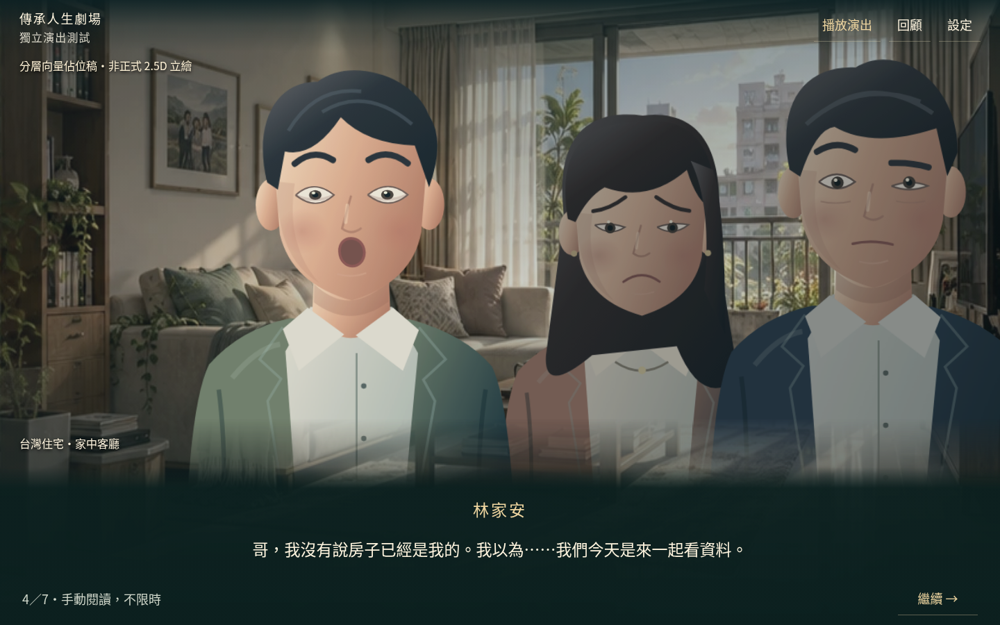
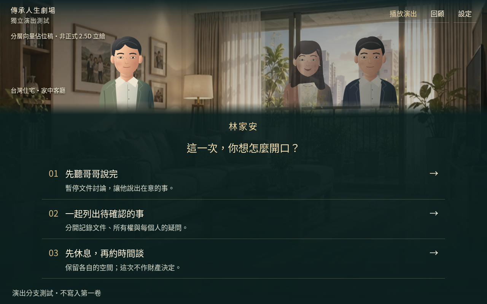
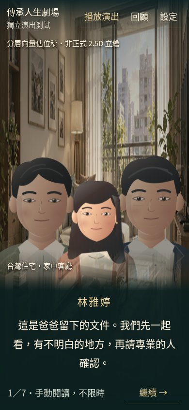
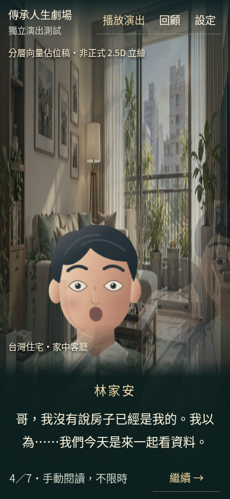
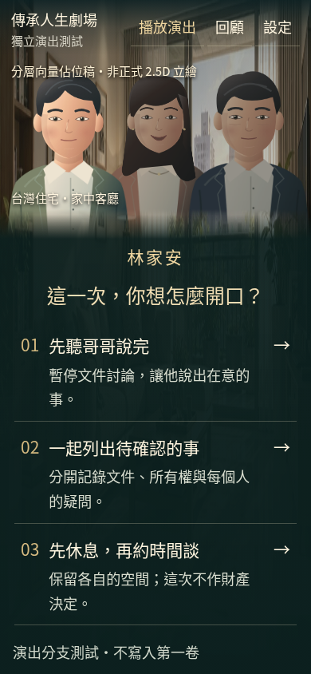
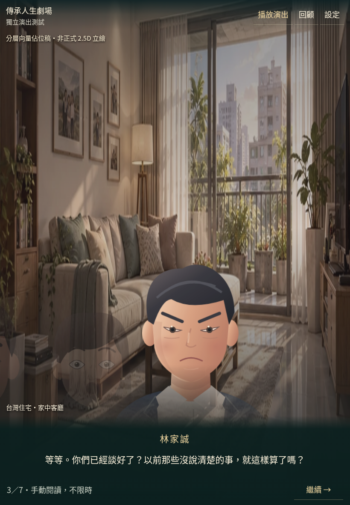

遺囑公布・動態演出測試
以下是實際瀏覽器錄製，約43秒、無配音。人物是分層向量佔位稿，並非正式精緻2.5D立繪。
直接開啟演出影片錄影保留真實字幕與選項，沒有加速或套入正式法律效果。預覽可手動閱讀，不限時間。
桌面：家庭衝突

桌面：主角震驚與重要選擇


手機：家庭衝突

手機：平靜、震驚與選擇



平板：人物與字幕

六種表情可從測試場景的「設定 → 六種表情檢視」操作。確認方向後再決定是否整合完整第一卷。